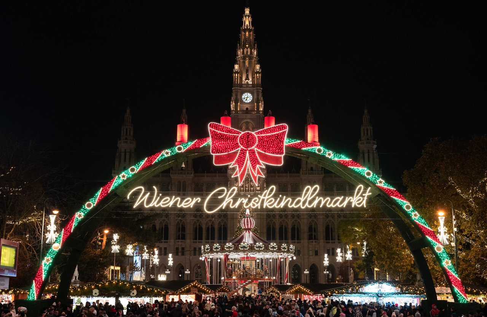

크리스마스 마켓
빈의 크리스마스 마켓은 유럽에서 가장 유명한 크리스마스 시장 중 하나입니다. 매년 11월부터 12월까지 열리며, 아름답게 장식된 광장과 전통적인 수공예품, 따뜻한 음식들을 즐길 수 있습니다. 오스트리아에서는 성스러운 크리스마스 날의 약 4주 전부터 예수님 탄생을 축하하는 준비가 시작됩니다.
비엔나 시청사 앞 광장에 대규모의 크리스마트 마켓과 스케이트장이 설치됩니다. 중앙에는 간이 매장이 줄지어 들어서고, 핸드메이드 크리스마스 장식, 그리스도의 탄생을 재현한 모형 크리페(krippe), 스파이스 부케, 유리 공예, 도자기, 텍스타일 공예, 가죽 제품, 액세서리, 목제 완구, 수공예품 둥을 판매합니다. 향신료가 들어간 렙쿠헨(Lebkuchen) 쿠키와 우리에게 펀치로 잘 알려진 푼쉬(Punsch) 칵테일 등의 먹거리도 충실합니다. * 2023년11월10일~12월26일: 10:00~22:00 * 2023년12월24일: 10:00~18:30
크리스마스 마켓 위치
시청 광장 (Rathausplatz), 빈, 오스트리아
여행하기 좋은 시기
11월 중순부터 12월 말까지 크리스마스 마켓이 열리며, 이 시기가 가장 적합합니다.
소소한 정보들
- 추천 옷차림: 따뜻한 겨울옷, 장갑, 목도리
- 여행 경비: 약 100~150 유로(1일 기준)
- 화폐 단위: 유로 (EUR), 1유로 = 약 1400원